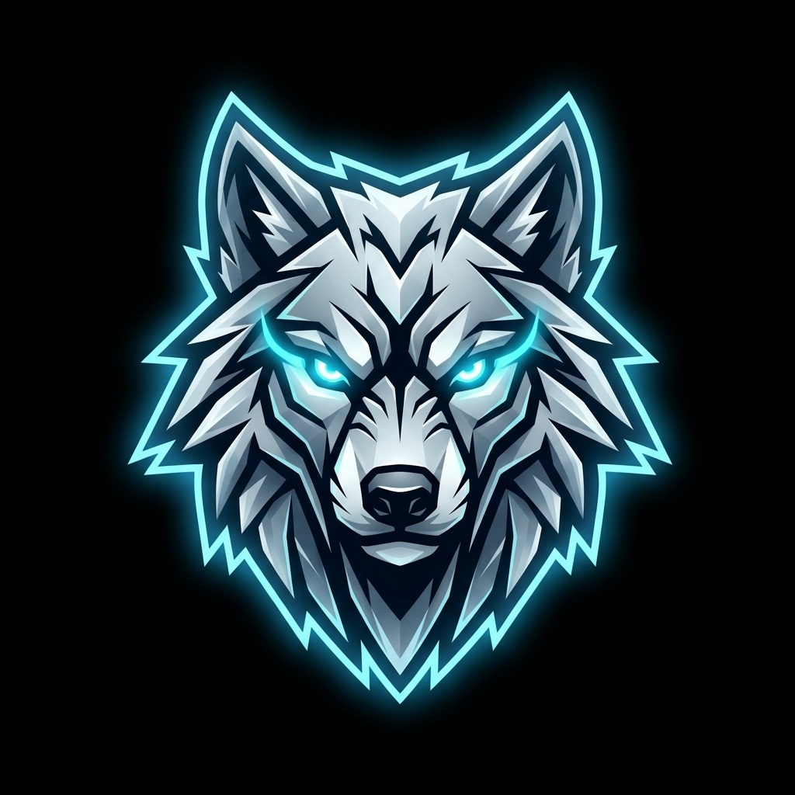

Forge Relentless Discipline
With Your Pack
A dedicated, anti-cheat fitness and habit tracking bot engineered for private Discord communities. Track 5 core calisthenics disciplines, parse workouts with AI, protect streaks with Frost Shields, and climb a 12-level pack hierarchy.
Ceiling
Disciplines
Ranks
& Private
Why Winter Arc Was Built
Most fitness trackers fail because they rely on solitary motivation or bloated apps that sell subscriptions. Winter Arc was engineered for a completely different reality.
Tribal Group Accountability
Real discipline thrives when witnessed by peers. Winter Arc lives inside your private Discord server where your closest friends or training partners see every completed rep, every missed day, and every clean streak.
Anti-Cheat Daily Ceiling
To stop toxic binging and impossible vanity logging, daily points are capped strictly at 500. Consistency over 90 days matters infinitely more than doing 800 pushups in one erratic burst.
Zero Friction Logging
No slow apps, accounts, or complex interfaces. Type a slash command or drop a sentence in Discord using Groq natural language parsing, and your workout volume is logged in milliseconds.
Data Sovereignty & Privacy
Your server owns its data. SQLite stores everything locally on your server or hosting instance. No third-party data collection, analytics trackers, or external database lock-in.
The Winter Arc Journey & Philosophy
While the world slows down, embraces comfort food, and postpones discipline to New Year resolutions, the pack enters monk mode in the freezing dark.

Disappear in Silence. Emerge Undeniable.
The Winter Arc is not a 7-day fitness trend. It is an intentional seasonal lockdown spanning October through January. When mornings are pitch black and temperatures drop below freezing, the psychological friction of training skyrockets.
That friction is your leverage. By eliminating dopamine traps, stacking 500 points of daily calisthenic volume, and letting your Discord peers witness your daily output, you forge an unshakeable standard of mental resilience.
“When the freeze sets in, excuses multiply. That is the exact moment the pack pulls away.”
The Trial & Calibration
Test-drive the 5 disciplines, establish your sleep schedule, configure the Discord bot, and eliminate logistical excuses before the official season starts.
The Shock & Lock-in
The official kickoff. Shock the nervous system into daily volume, power through initial DOMS and muscle soreness, cut mindless doomscrolling, and lock in your first Clean Day streak.
The Dark Tunnel
Initial excitement vanishes. Days shorten and the weather turns bitter. Motivation is replaced by cold, mechanical discipline. You log reps simply because it is non-negotiable.
The Crucible
The true test of the Winter Arc. Heavy holiday temptations, brutal cold, and end-of-year distractions everywhere. While the rest of the world quits, the pack locks shields and ascends to Apex rank.
The New Standard
While the masses scramble to write fragile New Year resolutions, you are already transformed. The 90-day crucible concludes, but your discipline has become your permanent baseline.
Engineered For Relentless Performance
Every feature is calibrated to foster consistency, eliminate excuses, and build athletic endurance.
The Five Core Disciplines
Modelled after the legendary Saitama challenge — 100 push-ups, 100 sit-ups, 100 squats, and a 10 km run — amplified with 100 pull-ups to forge complete calisthenic power.
High Ceiling. Zero Barrier. Every Rep Counts.
500 points a day is a brutal mountain — and that is the point. You are not expected to hit peak volume on day one. Whether you can only grind out 10 push-ups, 2 pull-ups, or jog a single kilometer today, log it. Every single repetition earns points toward your pack rank. The Winter Arc is about locking in, embracing the cold, and stacking volume in silence until you become undeniable.
Maxing out all 500 daily points earns Clean Day status and fuels your active streak.
Dual Logging Engine
Log progress incrementally across multiple workouts throughout the day with /log, or override your daily total directly with /set to fix typos or adjust totals.
/log task:pushups amount:25
/set task:running amount:5.0
AI Natural Language Logging
Integrated with Groq LLM for instantaneous natural language parsing via /quick, and Google Gemini via /grind to evaluate academic or engineering friction for supplemental focus points.
/quick "knocked out 40 squats and ran 3.5km"
/grind "spent 5 hours fixing kernel memory leaks"
Frost Shield Streak Defense
Rest and illness are real. Rather than punishing legitimate recovery days with a hard reset, warriors earn Frost Shields by reaching streak milestones, protecting their streak for a day with /shield use.
/shield status
/shield use reason:"High fever recovery"
Automated Scheduled Cadence
Precision cron schedules keep the pack aligned. Three daily checkpoints are broadcast strictly into the designated channel:
- 05:00 — Morning Wakeup & Challenge Announcement
- 16:30 — Midday Accountability Pulse
- 00:00 — Midnight Podium Finalization & Streak Calculation
Dynamic Discipline Administration
Server admins can add custom exercises (such as Planks, Cold Showers, or Reading) on the fly with /admin task_add, toggle existing tasks on or off, and manage dedicated channels without modifying any code.
/admin task_add name:"Plank" goal:300 unit:"sec"
/admin task_toggle task_id:3
The 12-Level Pack Hierarchy
Calibrated for a grueling 90-day Winter Arc. Apex rank requires 12,000 lifetime points, demanding an average of 133+ points every single day.
| Level | Rank Title | Point Range | Daily Avg Target | Status |
|---|---|---|---|---|
| 01 | Lone Stray | 0 – 499 pts | Day 1 – 3 | Initiation |
| 02 | Stray | 500 – 1,199 pts | Day 4 – 8 | Habit Forming |
| 03 | Scout | 1,200 – 1,999 pts | Day 9 – 15 | Building Momentum |
| 04 | Prowler | 2,000 – 2,999 pts | Day 16 – 22 | Routine Locked |
| 05 | Tracker | 3,000 – 4,199 pts | Day 23 – 31 | Reliable Volume |
| 06 | Hunter | 4,200 – 5,499 pts | Day 32 – 41 | Halfway Milestone |
| 07 | Savage | 5,500 – 6,999 pts | Day 42 – 52 | High Endurance |
| 08 | Vanguard | 7,000 – 8,499 pts | Day 53 – 63 | Elite Discipline |
| 09 | Frostborn | 8,500 – 9,799 pts | Day 64 – 73 | Winter Hardened |
| 10 | Predator | 9,800 – 10,799 pts | Day 74 – 81 | Relentless Output |
| 11 | Alpha | 10,800 – 11,999 pts | Day 82 – 89 | Final Ascent |
| 12 | Apex | 12,000+ pts | Day 90+ | Peak Mastery |
Slash Commands
All interactions use Discord native slash commands with parameter autocompletion and instant visual feedback.
Self-Host Your Winter Arc Instance
This bot is self-hosted and private to your community. Fork the repository, plug in your Discord bot credentials, and deploy on Wispbyte, a Linux VPS, or cloud container.
Fork the Repository
Begin by forking the official repository to your own GitHub account:
git clone https://github.com/vishnunandan555/winter-arc-discord-bot.git
cd winter-arc-discord-botDiscord Developer Portal Setup
Create your bot credentials in the Discord Developer Portal:
- Open the Discord Developer Portal and click New Application.
- Navigate to the Bot tab and click Reset Token to copy your bot token.
- Scroll to Privileged Gateway Intents and enable both:
- Server Members Intent
- Message Content Intent
- Save changes.
Configure Environment Variables (.env)
Copy .env.example to .env and define your variables:
# Required: Discord Bot Token from Developer Portal
DISCORD_TOKEN=your_bot_token_here
# Timezone for scheduled broadcasts (Default: Asia/Kolkata)
BOT_TIMEZONE=Asia/Kolkata
# Optional: Default role ID to mention on announcements
WINTER_ARC_ROLE_ID=
# Optional: AI capabilities for /quick and /grind commands
GROQ_API_KEY=your_groq_api_key_here
GEMINI_API_KEY=your_gemini_api_key_hereChoose Your Hosting Environment
Deploying on Wispbyte (or any Pterodactyl Panel)
Wispbyte provides Discord bot server instances running Python in Docker containers with 24/7 uptime and built-in auto-restart.
In the Wispbyte panel, select Create Server and choose the Python / Generic Bot egg or image (Python 3.11+ recommended).
Under File Manager or Git Repository, clone your forked repository or upload the files including requirements.txt, bot.py, and subdirectories.
Ensure the startup script runs pip installation or execute the following in the server terminal console:
pip install -r requirements.txtIn the Startup or Variables tab on the Wispbyte panel:
- Set Startup Command to:
python bot.py - In File Manager, create a
.envfile and paste yourDISCORD_TOKENand other variables.
Click Start on the console. The bot will connect to Discord, register slash commands, and initialize the SQLite database automatically.
Deploying on Linux VPS (Ubuntu / Debian Systemd)
Recommended for full control on DigitalOcean, Hetzner, AWS EC2, or Linode servers.
git clone https://github.com/your-username/winter-arc-discord-bot.git
cd winter-arc-discord-bot
python3 -m venv .venv
source .venv/bin/activate
pip install -r requirements.txt
cp .env.example .env
nano .env # Paste your DISCORD_TOKEN[Unit]
Description=Winter Arc Discord Bot Service
After=network.target
[Service]
Type=simple
User=ubuntu
WorkingDirectory=/home/ubuntu/winter-arc-discord-bot
ExecStart=/home/ubuntu/winter-arc-discord-bot/.venv/bin/python bot.py
Restart=always
RestartSec=10
[Install]
WantedBy=multi-user.targetsudo systemctl daemon-reload
sudo systemctl enable winter-arc
sudo systemctl start winter-arc
sudo journalctl -u winter-arc -fDeploying on Cloud (Render Background Worker / Railway)
Discord bots require a persistent background worker process that maintains a live WebSocket gateway connection.
On Render or Railway, create a new Background Worker (not a Web Service, as Discord bots do not open an HTTP listening port).
- Build Command:
pip install -r requirements.txt - Start Command:
python bot.py
Add DISCORD_TOKEN and BOT_TIMEZONE in the dashboard settings, then trigger deployment.
Initial Server Configuration
Once your instance is online, run these setup commands inside your Discord server:
/admin set_channel channel:#winter-arc
Designates the text channel where daily reminders and podiums are announced.
/admin set_role role:@Winter Arc
Sets the notification role pinged during morning and evening broadcasts.
/enroll
Enrolls members into the challenge and grants them the configured role.